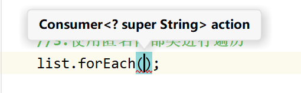
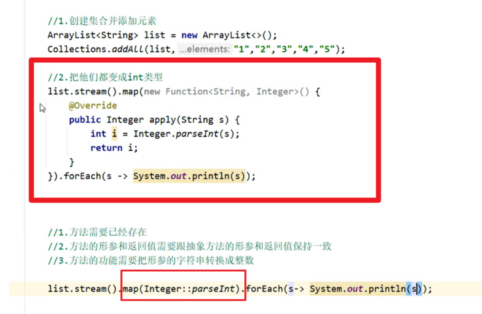
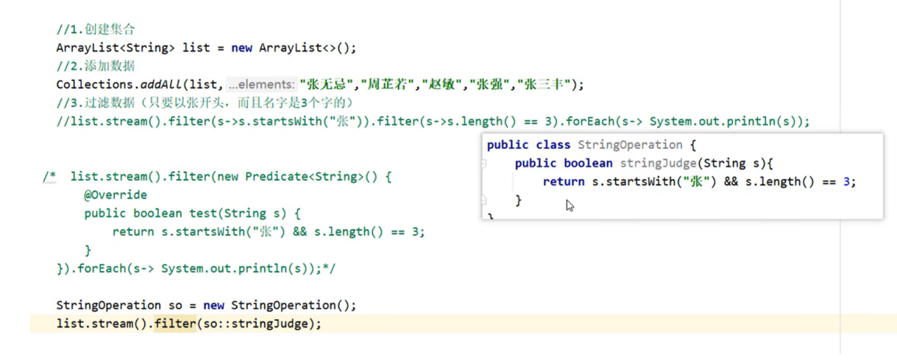
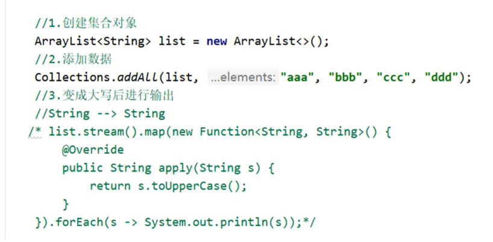
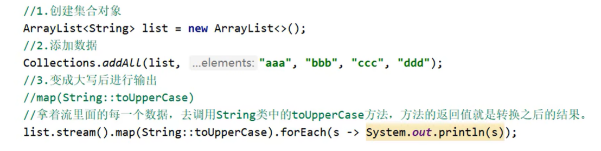

Java：JDK8函数式接口、lambda表达式、方法引用
一、函数式接口
只有一个抽象方法的接口就成为函数式接口。同时，引入了一个新的注解：@FunctionalInterface。可以把他它放在一个接口前，表示这个接口是一个函数式接口。这个注解是非必须的，只要接口只包含一个方法的接口，虚拟机会自动判断，不过最好在接口上使用注解 @FunctionalInterface 进行声明。在接口中添加了 @FunctionalInterface 的接口，只允许有一个抽象方法，否则编译器也会报错。
举例几个Java常用的函数式接口：predicate断言型接口、consumer消费者接口、supplier提供者接口、Function接口等。
记好一句话：函数式接口可以接收匿名内部类和lambda表达式
记好一句话：函数式接口可以接收匿名内部类和lambda表达式
记好一句话：函数式接口可以接收匿名内部类和lambda表达式
全文重点：
俗话说，new一个接口就要new他的实现类对象，但是假设我不存在函数时接口的实现类对象，那么一般就使用匿名内部类的形式创建对象。创建出来的匿名内部类需要实现函数式接口中全部（其实就一个）的抽象方法。既然是匿名内部类的抽象方法，当然可以使用lambda表达式代替方法的实现。然而使用lambda表达式虽然简便了书写，但是代码的可读性也直线下降，没有注解的情况去读lambda表达式十分痛苦，为了针对代码可读性的问题，方法引用应运而生。方法引用作为lambda表达式的语法糖，可以简化lambda表达式的同时，提高代码的可读性，方法引用通过本篇博客的三种情况，代替lambda表达式的书写。
1.1 Predicate
java.util.function.Predicate为函数式接口，predicate的中文意思是“断定”，即判断的意思，判断某个东西是否满足某种条件； 因此它包含test方法，根据输入值来做逻辑判断，其结果为True或者False。
Predicate是一个布尔类型的函数，该函数只有一个输入参数。Predicate接口包含了多种默认方法，用于处理复杂的逻辑动词（and, or, negate）
1 | public interface Predicate<T>{ |
下面是使用Predicate的例子。
1 | Predicate<Integer> atLeast5 = x -> x>5; |
x>5 是表达式的主体，返回值就是表达式主体的值。
1.2 Function
java.util.function.Function也是一个函数式编程接口；它代表的含义是“函数”，而函数经常是有输入输出的，因此它含有一个apply方法，包含一个输入（一个参数）与一个输出（返回值）；
除apply方法外，它还有compose 与 andThen方法。
**高阶函数: **
接受一个函数或返回一个函数。
1 | Function<Integer, Integer> f = s -> s + 1; |
- 转换器实例
1 | /**定义一个转换的函数式接口 |
1 | public class ConverterTest { |
1.3 Consumer 消费者（重点）
它定义了一个名为accept的抽象方法，该方法接受一个参数并且不返回任何结果。换句话说，Consumer接口表示一个消费者，它可以对给定的对象执行某些操作，但不产生任何结果。
accept(T) 方法：是 Consumer 函数式接口的函数方法，传入一个任意类型，无返回值，可以用于 Lambda 表达式和方法引用。andThen(Consumer) 方法：可以传入一个 Consumer ，返回组合了两个 Consumer 后的 Consumer ，传入的 Consumer 不能为 null，否则会得到 NullPointerException 。
通俗的来说：
Consumer 相当于一个放东西的容器，你可以在这个容器里定义一个带有入参的代码块，然后返回 T 类型，当调用 accept(T) 方法的时候才会去执行容器里的代码。
例子1：使用类名引用成员方法（类名引用成员方法见本篇博客第三节3.3）
1 | //引用实例方法 |
例子2：使用Consumer函数式接口接受lambda表达式
1 | import java.util.function.Consumer; |
1.4 Supplier 供应者
代表无参数，返回一个结果。
1 | //引用默认构造函数 |
1.5 BinaryOperator
BinaryOperator接口接收两个参数，返回一个值，返回值和参数的数据类型相同。BinaryOperator接口是BiFunction（接收两个参数）的子接口。
1 | BinaryOperator<Long> addLongs = (x,y) -> x + y; |
==Lambda表达式是一个匿名方法，将行为像数据一样传递。==
二、Lambda表达式

1、Lambda表达式的基本作用?
简化函数式接口的匿名内部类的写法。
2、Lambda表达式有什么使用前提?
必须是接口的匿名内部类，接口中只能有一个抽象方法
3、Lambda的好处?
Lambda是一个匿名函数，我们可以把Lambda表达式理解为是一段可以传递的代码，它可以写出更简洁、更灵活的代码，作为一种更紧凑的代码风格，使Java语言表达能力得到了提升。
举个例子：单列集合arraylist调用foreach方法进行遍历。

其中方法的参数是consumer接口（留意一下consumer接口）的实现类，因此需要使用匿名内部类的形式调用方法，改进后可以使用lambda表达式遍历。
1 | public class test1 { |
三、方法引用

只有使用匿名内部类和lambda表达式的地方才可以使用方法引用。
它的基本思想是，如果一个Lambda代表的只是“直接调用这个方法”，那最好还是用名称来调用它，而不是去描述如何调用它。事实上，方法引用就是让你根据已有的方法实现来创建Lambda表达式。但是，显式地指明方法的名称，你的代码的可读性会更好。
方法引用的规则:
- 需要有函数式接口
- 被引用的方法必须已经存在
- 被引用方法的形参，需要跟抽象方法的第二个形参到最后一个形参保持一致， 返回值需要保持一致。
- 被引用方法的功能需要满足当前的需求
抽象方法形参的详解:
第一个参数：表示被引用方法的调用者，决定了可以引用哪些类中的方法
在Stream流当中，第一个参数一般都表示流里面的每一个数据。假设流里面的数据是字符串，那么使用这种方式进行方法引用，只能引用String这个类中的方法。
第二个参数到最后一个参数：跟被引用方法的形参保持一致，如果没有第二个参数，说明被引用的方法需要是无参的成员方法
3.1 静态方法引用

举个例子

3.2 对象引用成员方法

this::方法名和super::方法名，这两个的被引用处不能是静态方法，因为静态方法没有this、super关键字
举个例子：

3.3 类名引用成员方法
举个例子：我现在需要把集合中的字母全部变成大写，使用匿名内部类语法如下
现在使用类名引用方法的形式，首先看String类中的toUpperCase方法

按照抽象方法参数的详解（3.1节），匿名内部类中抽象方法apply中的参数String s是抽象方法的第一个参数，它决定能使用什么类的方法。
第二个参数到末尾的参数要和成员方法的一致，如果抽象方法只有一个参数，那么应该调用这个类的无参方法。
String类中的toUpperCase方法提供了两个，符合可以用空参的那个。

因此可以把匿名内部类的写法改成使用方法引用的形式
